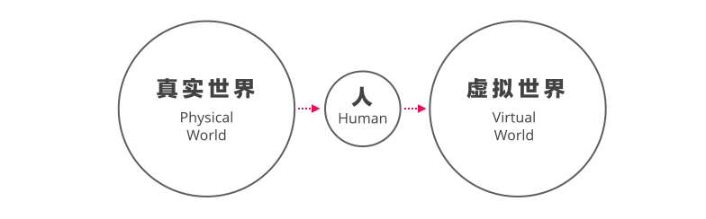
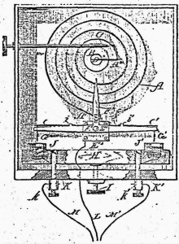
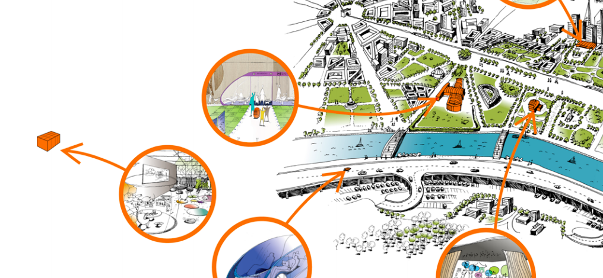

经过四篇的阅读笔记，我已经对物联网产生了自己的看法（这就是学习笔记的力量），在这篇文章中我将梳理出我对IoT核心逻辑的思考。
回顾人类的信息史，长久人类孜孜以求的是通过“某种手段”建立一个信息系统，然后从真实世界中搬运这些信息，而物联网的出现依然逃不开这一逻辑，这便是物联网的核心逻辑。
伟大的信息系统
人类从岩壁上记录牛羊数量时，就学会了通过建立信息系统改造这个物理世界，而当信息系统建立之后，人类要做的，往往只有两件事情：
- 让这个信息系统的计算能力（收集、存储、消费、再造、交换）更强；
- 让这个信息系统吸纳真实世界信息的能力更强。
于是史前人类进化出相较图像拥有更多存储能力的文字（更强的信息系统），并让文字变得拼音化使得它更适合传播（更多的人使用从而获得更强的吸纳能力）。
同样的逻辑适用于互联网，互联网是史上最强大的信息系统，拥有几乎无限的存储、消费、再造、和交换能力，而它不断低廉的成本（包括终端和接入成本）使得其具备吸纳真实世界信息无以伦比的能力。
但是，直到目前，大部分情况下，真实世界和这个强大信息系统之间依然隔着人类。古代人类需要每日清点仓库，现代人类依然需要做这件事情，虽然帮助他做这件事情变成了各种电子设备。

换句话说，人成为了这个史上最强大的信息系统吸纳真实世界信息能力的瓶颈。
真实世界的信息系统
人们意识到，还有一个“不需要有人参与”的信息系统存在，而这个信息系统的容量可能比人工构建的互联网还要巨大，这就是“物联网”——一个真实世界的信息系统。
当人类认识到这个潜在的信息系统，对于这个信息系统，人们要做事情也只有两件：
- 让这个信息系统的计算能力（收集、存储、消费、再造、交换）更强；
- 让这个信息系统反哺虚拟世界信息的能力更强。
这就是物联网的核心目标：
- 将真实世界打造成不同于虚拟世界的新的信息系统；
- 将这个新的信息系统和虚拟世界的信息系统关联。
真实世界的挑战
来自真实世界的挑战自然与上述的两个核心目标相关。首先是计算能力所需的成本。
计算能力的获得通常通过两种方式，一种是把单个对象作为计算能力的本体，通过传感器（Sensor）收集特定信息，例如，贴在人体侦测身体指标的传感贴纸；
另一种是把多个对象组成的子系统作为计算能力的本体，通过传感器收集特定信息，例如，商场特定区域的探测人流的传感器。
两种方式都需要传感器配合，传感器本身价格、铺设成本、维护成本都决定了计算能力所需的成本。
其次是信息系统互联的成本，这里的互联包括两个：
第一，是真实世界信息系统内各个对象间、各个子系统间的互联，例如商场的人流传感器是否能和商场内的自动售卖机联动，当人流多的时候在售卖机上提供更多的营销广告；
第二，是真实世界信息系统和虚拟世界信息系统的互联，例如商场内自动售卖机和会员系统联合，顾客可以用会员点数换购饮品。
这里的挑战来自于：连接性（Connectivity）和不统一的标准，前者的成本取决于网络连接（特别是无线网络连接）的稳定，而后者正式业界头痛的地方，各种接入设备缺乏统一标准。
对挑战的应对
物联网并非新鲜事物，人类在以互联网为基础的虚拟世界建立起来之前，就开始尝试收集真实世界的信息，并使用它——传感器在自动控制的历史上起到了举足轻重的地位，1883年，Warren S. Johnson发明了世界上第一款温度探测器。

物联网概念的兴起来自于单位价格可以购买的计算能力持续提升、互联网带来连接性等基础设施投入。Warren S. Johnson发明温度探测器之后101年的2014年，谷歌32亿美元收购Nest，而Nest温度探测器产品本质上和101年的那款没有太大区别，真正的区别在于Nest产品本身的计算能力与连接性。
因此，物联网可能是一个必然的结果，随着计算能力的不断提升、电子原件价格持续下降、传感器制造工艺和水平的提升、第4代以上数据网络的级数演进，越来越多的“对象（设备或普通物体）”会：
- 自发贡献其真实世界的信息而不需要人类干预；
- 相互连接、或与互联网连接，让更多真实世界的信息进入虚拟世界。
全新的机会
Wanrren S. Johnson的温度传感器开辟了一个超过130年的公司：Johnson Controls，130年后，强生控制公司推出了自己对于2040年工作环境的预测。

在这个系统中，针对越来越多的知识工作者，工作环境中的设备、环境、工具、以及数据被有机地整合在一起，工作地点的界限被完全模糊，整个物理世界被打造成一个复杂的信息系统，这便是真实世界数字化的结果，这个数字化的真实世界有以下场景，这也是物联网所覆盖的主要场景（参考2010年麦肯锡关于物联网的分析报告），它们是：
跟踪行为
处于系统内的所有对象（人、环境、物体、设备等）的行为数据被完全电子化记录，主动发送给虚拟世界；
实时告警
实时的物理环境相关告警，例如综合人体健康指标告警当前环境湿度；
传感器驱动的决策分析
系统的管理和经营者根据跟踪获得的数据制定更好的能源供给计划或网络带宽分配策略；
过程优化
根据能源供给和使用情况的策略自动调节太阳能板的角度；
资源优化
根据系统中能源使用的数据调整电力负载的分配，或调整系统中大众交通工具的出发频次；
复杂自动控制系统
根据关键指标侦测，在研发机构中控制机器人进行毒物清理。
越来越多的企业开始思考如何“数字化自己业务场景下的真实世界”，并基于此构建新的解决方案：EnerNOC利用物联网技术帮助商业地产、工厂和电力机构配置最佳的能源配置方案，总共节省了超过10亿美元，管理着价值151亿的能源。
不单单是能源和制造产业，物联网技术帮助那些以客户互动（Customer Engagement）为中心的企业建立全新的、集合真实和虚拟世界的信息系统，例如迪士尼耗资10亿美元最新推出的Magicband项目。
写在最后
物联网的核心逻辑依然没有脱离人类对于真实世界的改造，当虚拟世界发展到一定程度，人类开始把头转向那个和千百年前不无区别的物理世界。
受到计算能力的成本、和互联网络基础设施的限制，直到现在，人类才有机会根据需要将真实世界变成一个真正“有计算能力”和“可互联”的信息系统，并在此之上建立新的业务模式。
无论是让物理环境更加适合人类生存、提升资源的利用效率、还是提供更个性化的客户服务，人类面临的都是一个新的世界，一个真实和虚拟越来越模糊的世界。